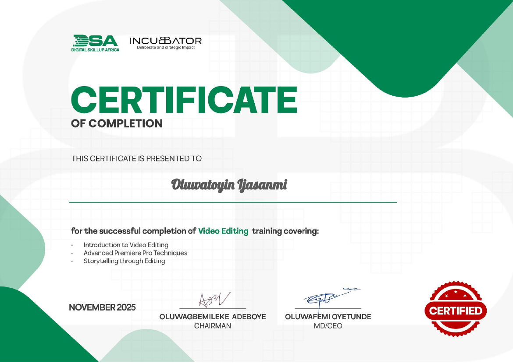
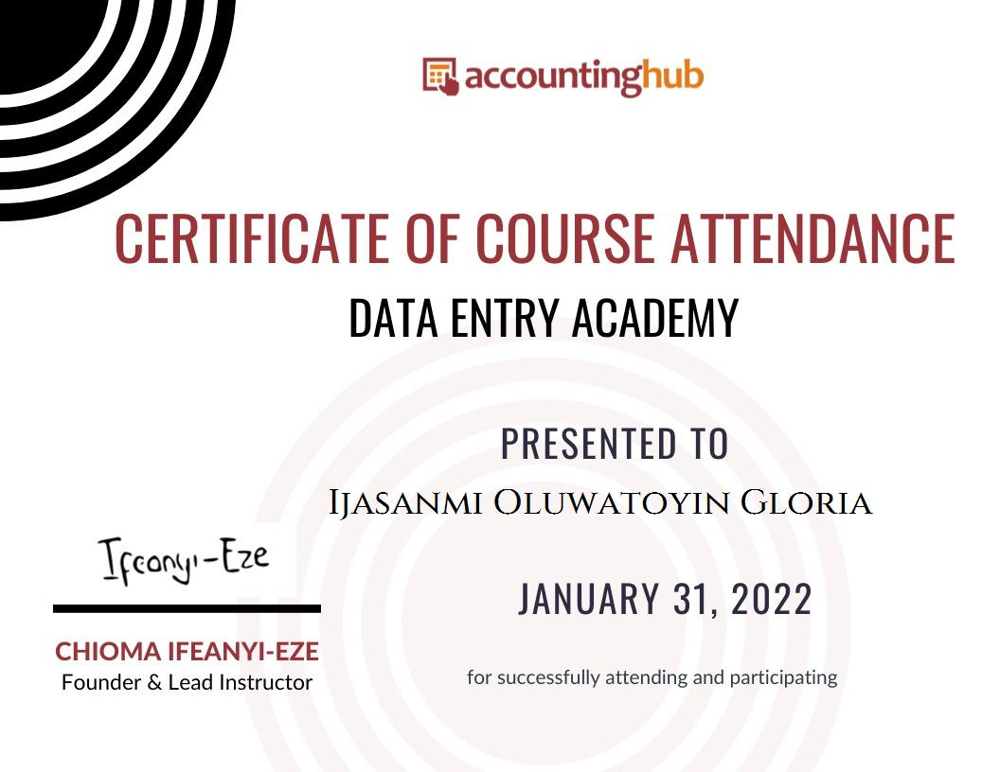

Miva Open University
Cybersecurity · 100 Level. Developing foundational knowledge of computing, programming, and information security.
BEHIND THE PROFILE
My background, what I'm learning, and the direction I hope to take my career.

MY STORY
My name is Oluwatoyin Ijasanmi. I work in digital marketing for a company that produces and sells gym equipment, and I study Cybersecurity at Miva Open University.
I enjoy meeting people, taking photographs, reading books, watching movies, creating content, and exploring new things. I also value quiet time to recharge.
My professional background has introduced me to websites, digital content, and online business. I'm building technical knowledge so I can help organisations protect websites and web applications.
EDUCATION
Cybersecurity · 100 Level. Developing foundational knowledge of computing, programming, and information security.
Completed secondary education.
SKILLS
HTML · CSS · JavaScript · WordPress · SEO · Digital marketing
Graphic and brand design · Video editing · Data entry · Cybersecurity fundamentals
BEYOND THE SCREEN
CERTIFICATES
Alongside my current cybersecurity studies, I have completed training in video editing and data entry.

VIDEO EDITINGCertificate provided for completed training.
View certificate (PDF) ↗
DATA ENTRYCertificate of course attendance, issued January 31, 2022.
View certificate image ↗